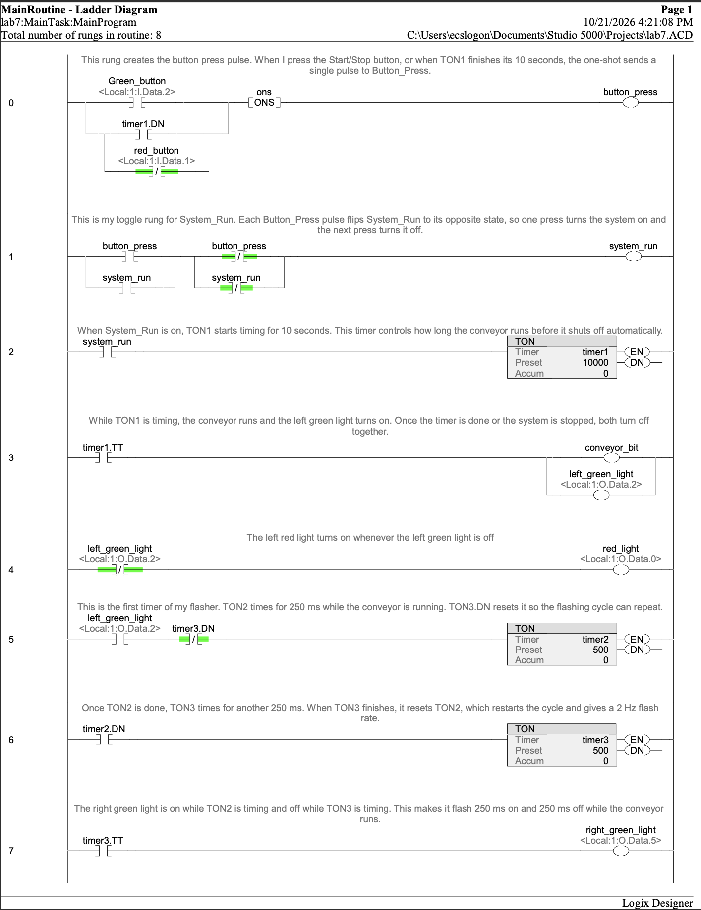
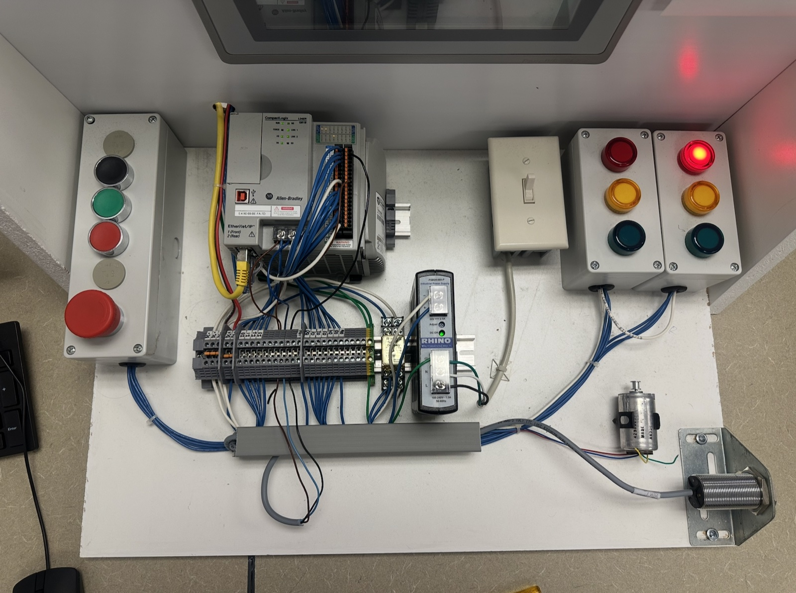

CompactLogix Conveyor Start/Stop with Auto Shutoff
A conveyor control program written in Studio 5000 and tested on a physical lab station. One push button starts and stops the conveyor, a TON timer shuts it off on its own after 10 seconds, and pilot lights show the conveyor state.
How it works
The program combines two building blocks: a one-shot (ONS) toggle that lets one button act as both Start and Stop, and TON timers. Feeding the 10-second timer's done bit back into the one-shot lets the timer "press the button" itself and turn the system off.
- Left green light: on while the conveyor runs.
- Right green light: flashes 500 ms on / 500 ms off while running.
- Left red light: on while the conveyor is stopped.
I/O map
| Device | Address |
|---|---|
| Green push button (Start/Stop) | Local:1:I.Data.2 |
| Red push button (Stop) | Local:1:I.Data.1 |
| Left green light | Local:1:O.Data.2 |
| Left red light | Local:1:O.Data.0 |
| Right green light | Local:1:O.Data.5 |
Logic highlights
- Rung 0: An ONS pulses
button_presswhen the button is pressed or whentimer1.DNcomes on. - Rung 1: An XOR seal-in toggles
system_runon each pulse. - Rungs 2–3:
timer1(10 s) runs while the system is on, andtimer1.TTdrives the conveyor and left green light so both drop out together. - Rung 4: The red light runs through an XIO of the green light, so red always means stopped.
- Rungs 5–7:
timer2andtimer3(500 ms each) reset each other to flash the right green light.
Debugging on hardware
The red light first worked backwards and came on while the system was running. Driving it from an XIO contact of the left green light fixed it, so it is now on whenever the conveyor is off.
Testing
Downloaded with no errors. On hardware: Start turns on the conveyor and green light. After 10 s the system shuts off and red comes on. Stop during a run turns everything off. The flasher holds a steady 500 ms on / 500 ms off.
Screenshots



